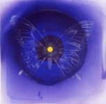
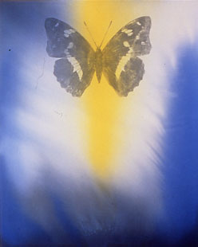
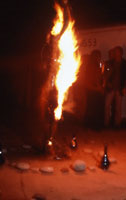

|  |

|
|||
|
The paintings in this exhibition correspond to an ongoing series of installations and kineticperformances by Woodruff collectively known as the Burning Woman Project. Painstakingly crafted papier-mache effigies of the artist are burned in ceremonial events often coinciding with celestial movements such as an Equinox or a Solstice. An especially beautiful, unburned example is installed in the center of the gallery show, surrounded on all sides by painted odes to the forces of Nature with which she communes. She is Promethea, and from Escalus to Shelley, this myth has presented the hero her namesake as a defiant champion of mankind; an archetype in this case lent a modern symbolic meaning as Promethea engenders (no pun intended) a feminine archetype of power. In counterpoint to the masculine idea of fire as a tool or a destructive force, in the fem- inine it symbolizes transformation and rebirth. Although the sculptures and their conflagrations are not necessarily paint-based, and although the paintings are representational, the do share certain formal, conceptual and spiritual concerns with the Burnings.
The
sculpture's gestalt is more overtly temporal than the enduring works on
canvas and panel. Yet beyond red herring comparisons to O'Keeffe and Frankenthaler,
Woodruff's paintings celebrate the defiant freedom of visual traditions
like Tibetan sand mandalas, meticulously executed expressly to be erased
by the elements thereby embracing impermanence and eternal flux. The paintings
are named with a fanciful eye toward the physical sciences: Properties
of Light, Luminiferous, Transmorfification, Transcendece, Psyche's Sisters
.
And in fact, the visual properties-the playful and optically dynamic interaction
between blue and yellow; the organic and expressive lines weaving through
color field washes-flirt with scientific image types as well as spiritual.
Resuscitating ancient visual symbols in a modern political context of
feminine revolution, Woodruff writes in her statement: "The triangle,
which dates back to the Chauvet Cave paintings, serves as a symbol for
the feminine. The Greek Psyche, which manifests as a butterfly is rep-resentative
of the spirit. The circle or mandala is the essence of the dreamer's search
for unity...In the resolution of this dialectic, where personal consciousness
and the collective unconscious merge, the art creates a ritual space for
each observer."
|
||||